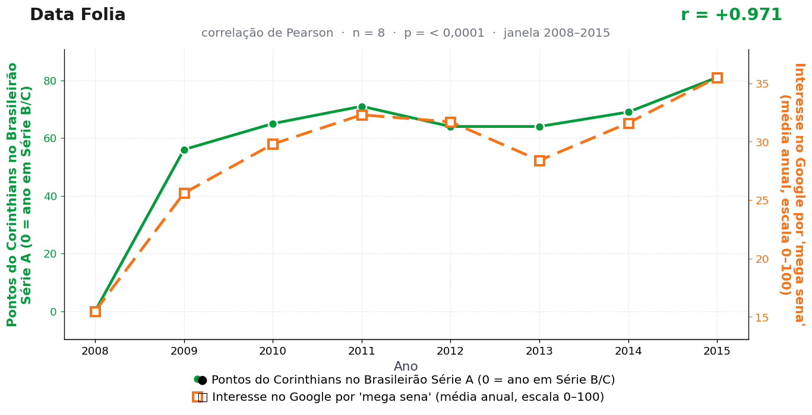

Post de 07/09/2026

A teoria
O Corinthians transforma chance pequena em rotina de trabalho. A torcida aprende a sustentar expectativa até o último minuto e exporta essa disciplina para outros territórios da esperança brasileira.
Quando o time pontua, o país recebe uma autorização simbólica para conversar com o acaso. O volante da Mega-Sena deixa de ser papel e vira extensão do grito de arquibancada: se a rodada permitiu, o sorteio também pode permitir.
A ligação opera pela confiança. O futebol entrega a prova emocional de que cenários apertados amadurecem; a loteria recebe essa energia em forma de busca, bolão e dezenas escolhidas com convicção.
A Caixa Econômica não patrocina esta conclusão. Ainda. Nossa proposta comercial — "a Fiel confere, o país aposta" — aguarda resposta no setor de loterias desde a última rodada.
A teoria é ficção; a correlação é real: r = 0,97 (n = 8, p < 0,001).
Os dados por trás

- Pontos do Corinthians no Brasileirão Série A (0 = ano em Série B/C) — 8 pontos anuais, período 2008–2015. Fonte: CBF / Wikipedia — Campeonato Brasileiro Série A.
- Interesse no Google por 'mega sena' (média anual, escala 0–100) — 8 pontos anuais, período 2008–2015. Fonte: Google Trends (pytrends).
Como as correlações deste site são encontradas — e por que você não deve confiar nelas — está explicado na nossa metodologia.
Por que isso acontece?
Duas coisas fabricam este r = 0,97. A primeira é o ponto de 2008, em que o Corinthians recebe "0" por estar na Série B — uma codificação nossa que cria um vale artificial bem no início da janela, ancorando a reta de regressão. A segunda é que a busca por "mega sena" no Google cresce ao longo do período junto com a própria internet brasileira: mais gente conectada, mais busca por tudo, loteria inclusive.
Ou seja: uma série tem um degrau (Série B → Série A e reconstrução até o título de 2015) e a outra tem uma rampa (digitalização do país). Degrau contra rampa, no mesmo sentido, produz correlação alta sem nenhum conteúdo causal — o formato das curvas decide tudo.
Vale notar que a série de buscas por "mega sena" aparece em mais de um post deste arquivo, cruzada com clubes diferentes. Reaproveitar a mesma série contra vários alvos até algum dar liga é a assinatura clássica do data dredging — deliberada, no nosso caso, e didática, esperamos.
Post de 07/09/2026 · publicado também no Instagram @datafolia.